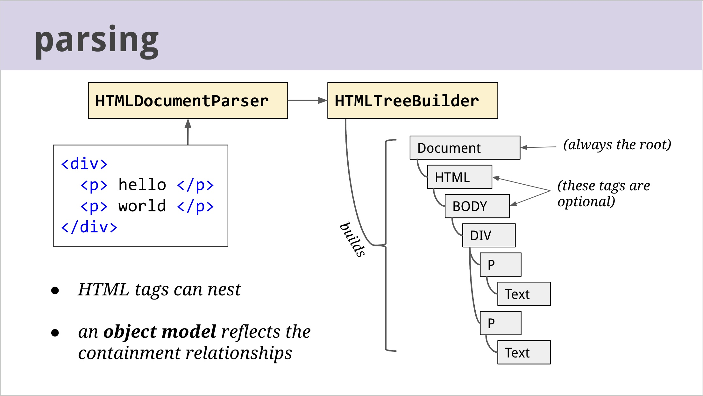
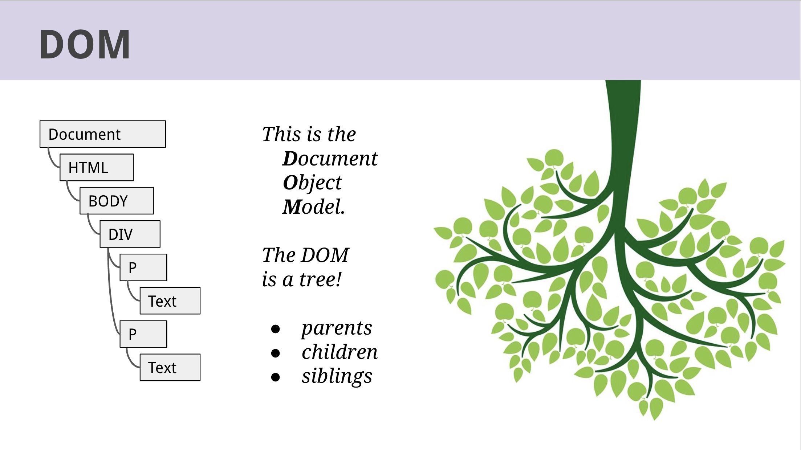
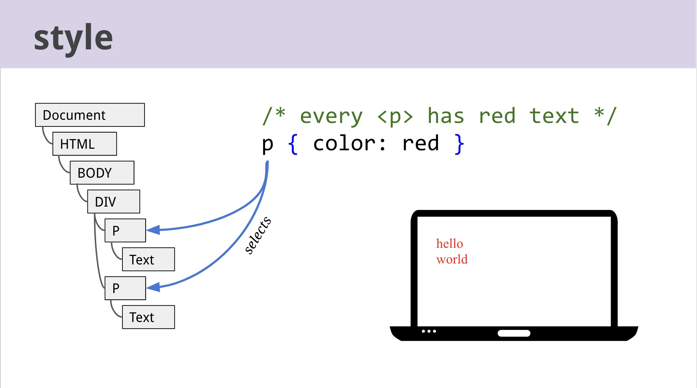
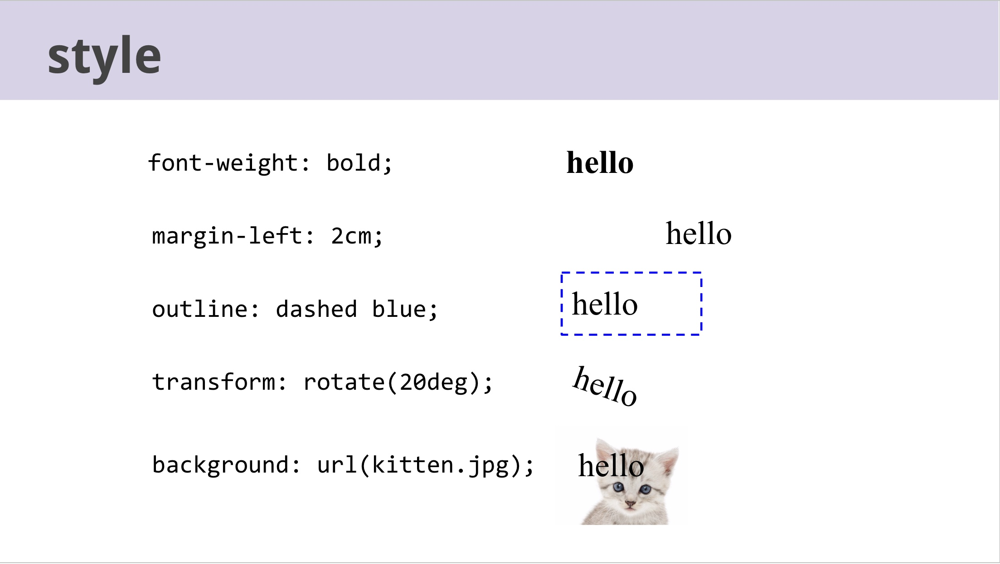
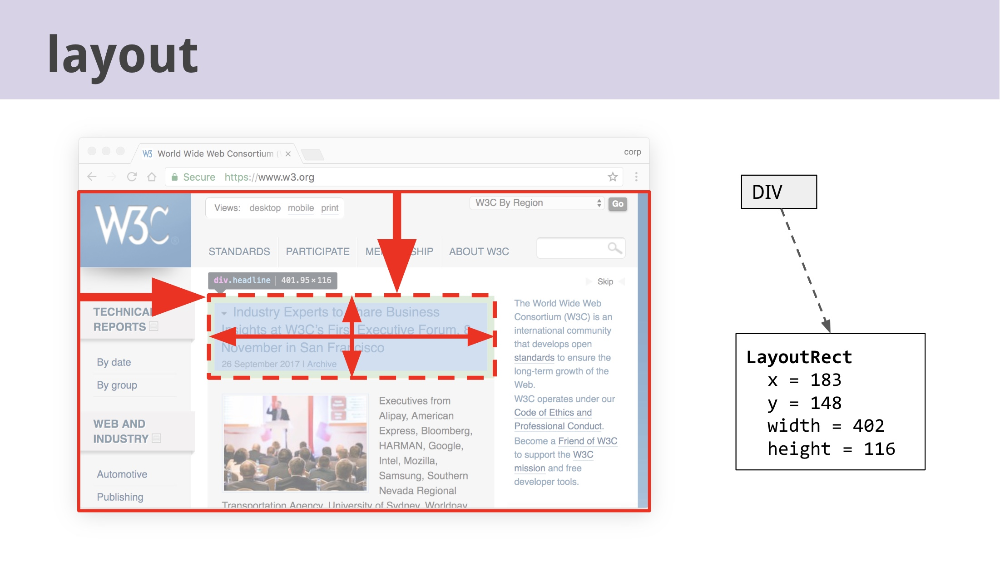
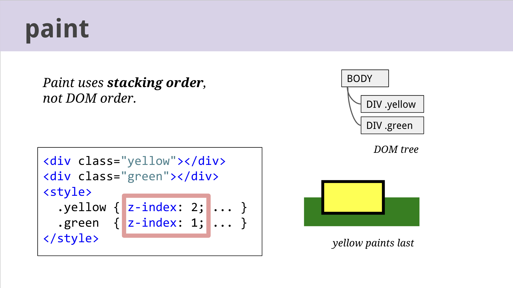
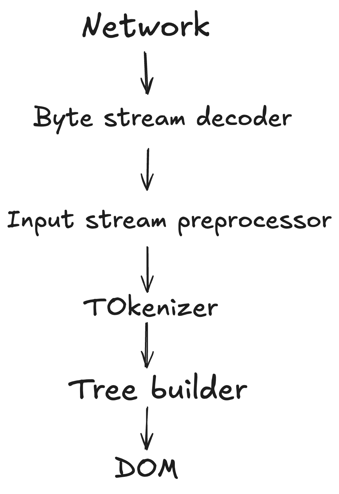
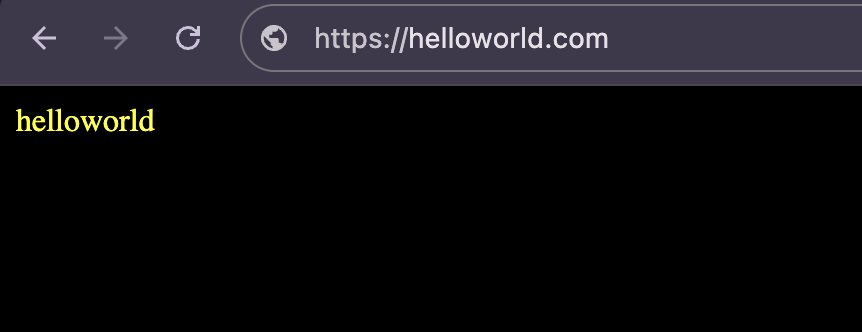
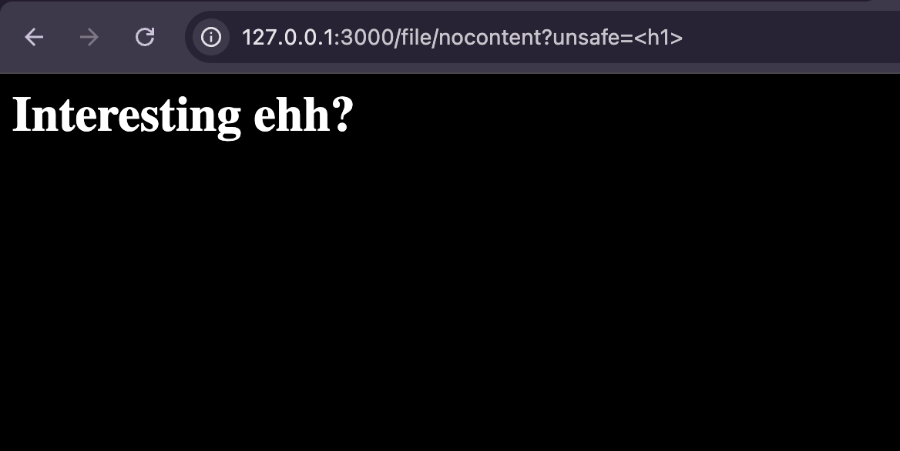
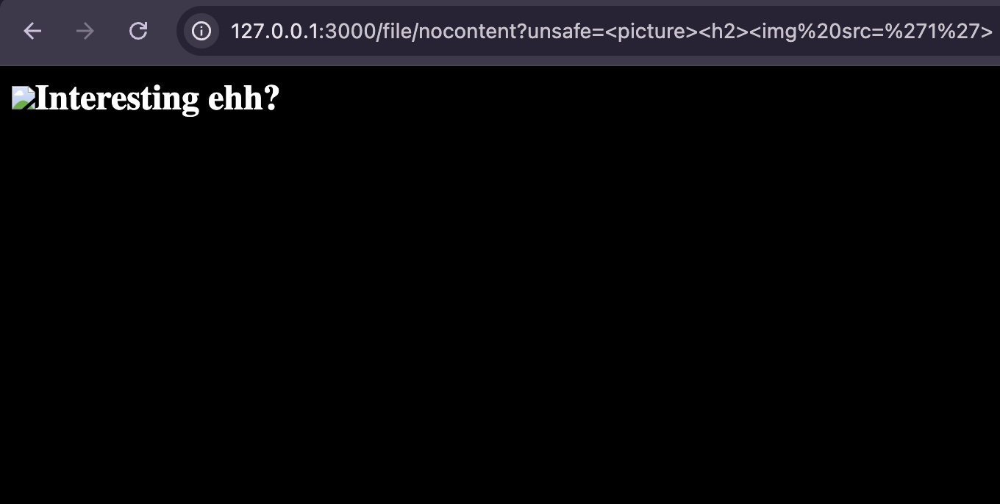

Parsing,Styling,Layout,Painting
When you visit a webpage, you see the final visual content, but have you ever wondered how it's actually rendered? Behind the scenes, the browser goes through several steps to process the data, turning raw code into the interactive page you see. Let’s break down these steps in simple terms.
1.Parsing [Building the DOM] - The browser reads the HTML code and converts it into a structured representation called the DOM (Document Object Model).Each HTML tag becomes a DOM node, forming a tree-like structure.
 
2.Styling [Applying CSS] - The browser processes CSS and figures out how each element should look (color, size, fonts, etc.).This information is applied to the corresponding DOM nodes.
 
3.Layout [Positioning Elements - The browser calculates the exact position and size of each element based on CSS rules and the structure of the page.This step ensures elements don’t overlap incorrectly and fit properly on the screen.

4.Painting [Rendering Pixels] - The browser takes all the information from the previous steps and paints the pixels onto the screen.This is when the page becomes visible to you.

ref: The rendering critical path
ref:The life of a pixel- The images used were from the slides.
Faster HTML and CSS: Layout Engine Internals for Web Developers- Interesting video from the past !
HTML Parsing: Understanding the Backbone of Web Rendering
HTML parsing is the process of reading an HTML document and converting it into a structured format that can be processed by a browser,Parsing a HTML document goes through the below stages !

Example:<!doctype html><p>helloworld
Lets take the above example and lets have a look at how the parser go through each steps.
1.Bytes go over the network and a decoder will produce a stream of code points.
2.The tokenizer walks through the stream of code points,character by character and emit tokens
3.A doctype token,a start tag token(p) and a series of character tokens are generated.
4.The tree builder take those tokens and builds the below dom.
Document
└── html
└── body
└── p
└── #text: helloworld

A simple helloworld to be displayed ! it need to go through all the steps.
Content Type:
The HTTP Content-Type representation header is used to indicate the original media type of a resource before any content encoding is applied.
Imagine there is no content-type header? how will browser sniff the content?
Lets take a example by rendering a sweet <h1> heading tag and see the response?
Anyway its expected to be render as html and it did ! no wonder...
Lets take another example by rendering a <h2> tag !
what happens now? whys h2 tag is rendered as text :0
This is because there is a set of rules/code that is in place which is reponsible for detection of a content.
Below is the code of HTML sniffer.Basically it tells the browser the need for certain tags to be rendered as an html page.
// Our HTML sniffer differs slightly from Mozilla. For example, Mozilla will
// decide that a document that begins "<!DOCTYPE SOAP-ENV:Envelope PUBLIC/" is
// HTML, but we will not.
#define MAGIC_HTML_TAG(tag) \
MAGIC_STRING("text/html", "<" tag)
static const MagicNumber kSniffableTags[] = {
// XML processing directive. Although this is not an HTML mime type, we sniff
// for this in the HTML phase because text/xml is just as powerful as HTML and
// we want to leverage our white space skipping technology.
MAGIC_NUMBER("text/xml", "<?xml"), // Mozilla
// DOCTYPEs
MAGIC_HTML_TAG("!DOCTYPE html"), // HTML5 spec
// Sniffable tags, ordered by how often they occur in sniffable documents.
MAGIC_HTML_TAG("script"), // HTML5 spec, Mozilla
MAGIC_HTML_TAG("html"), // HTML5 spec, Mozilla
MAGIC_HTML_TAG("!--"),
MAGIC_HTML_TAG("head"), // HTML5 spec, Mozilla
MAGIC_HTML_TAG("iframe"), // Mozilla
MAGIC_HTML_TAG("h1"), // Mozilla
MAGIC_HTML_TAG("div"), // Mozilla
MAGIC_HTML_TAG("font"), // Mozilla
MAGIC_HTML_TAG("table"), // Mozilla
MAGIC_HTML_TAG("a"), // Mozilla
MAGIC_HTML_TAG("style"), // Mozilla
MAGIC_HTML_TAG("title"), // Mozilla
MAGIC_HTML_TAG("b"), // Mozilla
MAGIC_HTML_TAG("body"), // Mozilla
MAGIC_HTML_TAG("br"),
MAGIC_HTML_TAG("p"), // Mozilla
};
// ...
// Returns true and sets result if the content appears to be HTML.
// Clears have_enough_content if more data could possibly change the result.
static bool SniffForHTML(base::StringPiece content,
bool* have_enough_content,
std::string* result) {
// For HTML, we are willing to consider up to 512 bytes. This may be overly
// conservative as IE only considers 256.
*have_enough_content &= TruncateStringPiece(512, &content);
// We adopt a strategy similar to that used by Mozilla to sniff HTML tags,
// but with some modifications to better match the HTML5 spec.
base::StringPiece trimmed =
base::TrimWhitespaceASCII(content, base::TRIM_LEADING);
// |trimmed| now starts at first non-whitespace character (or is empty).
return CheckForMagicNumbers(trimmed, kSniffableTags, result);
}
Quick Question :
If no content type is defined, are only the HTML elements/tags listed below responsible for rendering HTML, or can rendering be forced using other methods or elements?
<!DOCTYPE html>,<script>,<html,<!-->,<head>,<iframe>,<h1>,<div>,<font>,<table>,<a>,<style>,<title>,<body>,<br>,<p>

Interestingly the picture element works ! but it is not defined on the deciding sniffer file, then how?
Since the picture tag starts with 'p' and the MAGIC_HTML_TAG("p") checks for p,anything starts with p 'picture','progress' tags will work and make the content render as HTML..
I came to know about this behaviour/working through a challenge from Dreamhack wargame Small File Storage ! Thanks to my friends 0xAlessandro and Yuu.
To learn more about this visit Mime Sniffing
Character encoding:
HTML parser need to know the definite encoding to operate on an input byte stream of the document.
The character encoding can be defined using meta tag <meta charset="utf-8"> or it can be specified at the transport layer, HTTP Content-Type with charset parameter which gives the encoding of the document.
The document can also start with Byte Order Mark (BOM),If the document starts with the bytes given in the below column,then return the encoding correspondingly.

The precedence order for character encoding is Byte Order Mark (BOM) > HTTP Content-Type Header > Meta Tag in HTML rendering.
Before the HTML parser starts,a prescan of the byte stream can take place in an attempt to find the character encoding declaration.The prescan is usually done on the first 1024 bytes and there's a requirement for documents to include encoding declaration within 1024 bytes.
Quick Question :
What if no charset is defined ?
If no encoding declaration is found,then the default will usually depend on the user's locale and the most common default is windows-1252.
We can also abuse Encoding Differentials in absence of charsets, you can read more about it here Encoding Differentials: Why Charset Matters
Error Handling:
The HTML parser spec gives clear instructions on how to deal with errors that come up while reading an HTML document. Technically, a browser could stop processing if it hits an error, but that’s not what happens in practice. Instead, browsers follow the spec's rules for handling errors and fix the issues in a way that makes sure the content still loads and looks right.
The spec has a set of steps for how to recover from errors, which helps browsers keep going even when something goes wrong. This process makes sure web pages show up correctly, even if there are some mistakes in the HTML. It's really important because not all HTML is perfect, and this approach helps browsers keep things working smoothly for users.
When the HTML parser encounters issues like unclosed tags, missing quotes, or incorrect tag nesting, it doesn't stop or crash. Instead, it tries to fix these errors so that the page can still be displayed as correctly as possible.
Examples :

Adoption Agency Algorithm :
The Adoption Agency Algorithm is a process used in HTML to fix incorrect nesting of elements.
<p>1<b>2<i>3</b>4</i>5</p>